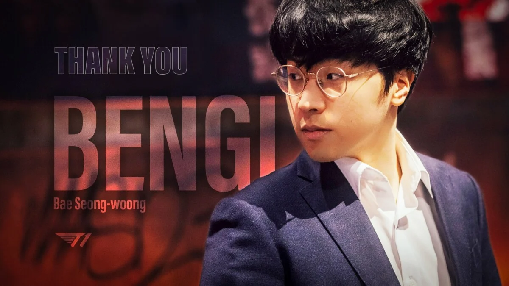

Bengi renuncia como entrenador principal de T1 en la LCK
El renombrado entrenador de League of Legends, Bae "Bengi" Seong-woong, ha anunciado su renuncia como entrenador principal del equipo T1 en la Liga Coreana de League of Legends (LCK). La noticia sorprendió a la comunidad de esports, ya que Bengi ha sido una figura emblemática en T1 y ha dejado una huella imborrable en la historia del juego.
Bengi, quien anteriormente fue un jugador destacado en el equipo SK Telecom T1, hizo la transición a entrenador después de retirarse como jugador profesional en 2017. Durante su carrera como jugador, Bengi fue conocido por su destacado desempeño en la jungla y su asociación con el legendario Faker, uno de los mejores jugadores de League of Legends de todos los tiempos.
Después de unirse al equipo T1 como entrenador en 2019, Bengi trabajó incansablemente para desarrollar y guiar a los jugadores jóvenes del equipo. Sin embargo, en su declaración oficial de renuncia, Bengi expresó la necesidad de tomarse un tiempo fuera del juego competitivo y explorar nuevas oportunidades.
Bengi expresó su gratitud hacia los jugadores y el personal de T1, así como hacia los fanáticos que lo han apoyado a lo largo de los años. Afirmó que su tiempo en T1 ha sido una experiencia inolvidable y que seguirá siendo un apasionado defensor del equipo.
La renuncia de Bengi deja un vacío en el equipo T1 y plantea interrogantes sobre quién asumirá el papel de entrenador principal. T1 es conocido por su historia de éxito en el escenario internacional, habiendo ganado tres campeonatos mundiales en los últimos años. Los fanáticos están ansiosos por conocer los planes futuros del equipo y cómo se adaptará a esta nueva situación.
Volver a la página principal